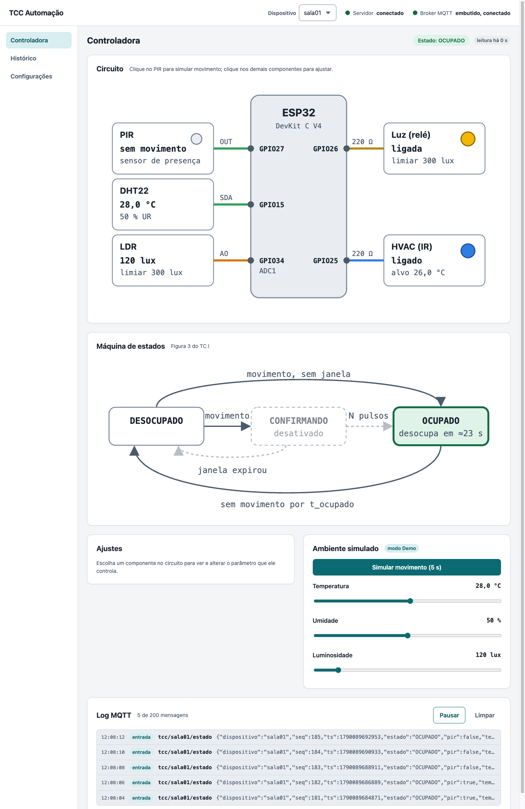
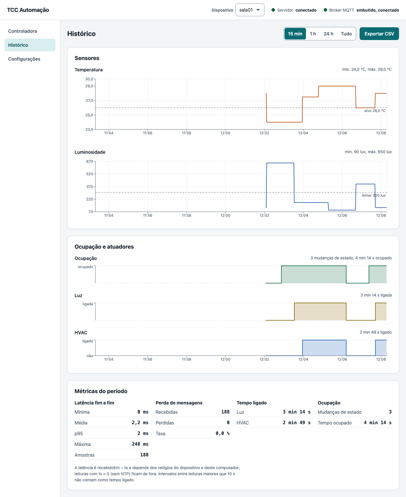
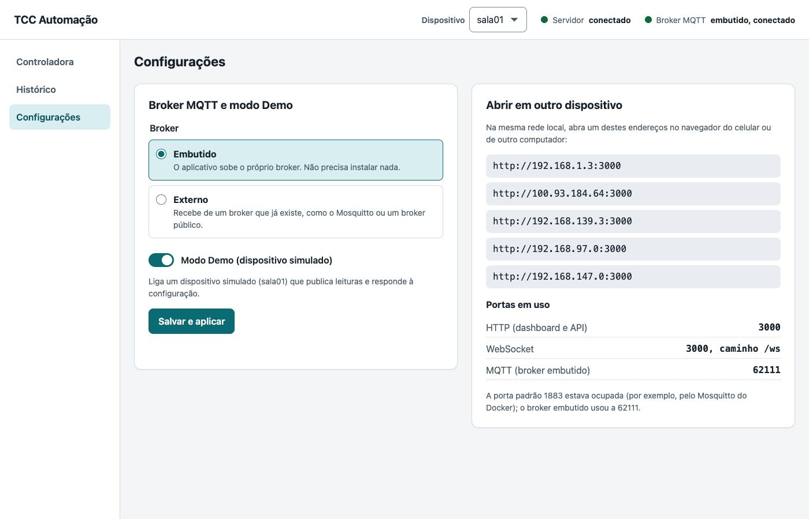
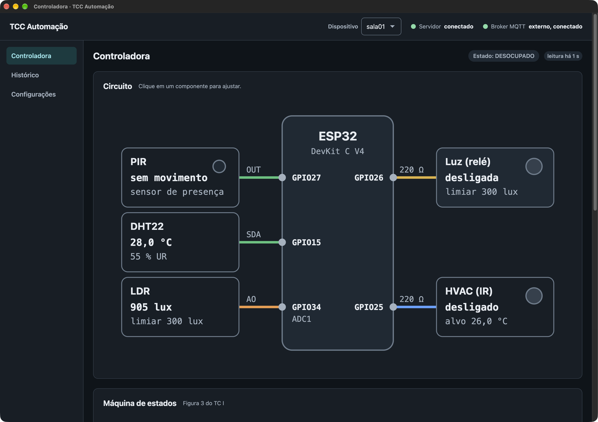

UNIP — Universidade Paulista · Ciência da Computação · Polo Anápolis
Guia do protótipo: o que foi construído, como funciona por dentro e como usar o aplicativo
O projeto automatiza a iluminação e a climatização de uma sala a partir da presença de pessoas: a luz só acende e o ar-condicionado só liga quando há alguém no ambiente, e desligam sozinhos quando a sala fica vazia.
O trabalho combina revisão integrativa de literatura com uma prova de conceito. O TC I propôs um modelo arquitetural preliminar (Figuras 2 e 3 do pré-projeto). No TC II esse modelo é tratado como hipótese:
| Parte | O que faz |
|---|---|
| Firmware do ESP32 | Lê o sensor de presença (PIR), temperatura e umidade (DHT22) e luminosidade (LDR); decide pela máquina de estados; aciona a luz e o ar-condicionado; publica o estado por MQTT. Roda no simulador Wokwi. |
| Aplicativo desktop | Instalável no macOS e no Windows. Recebe as leituras, guarda o histórico, calcula as métricas e mostra tudo num painel com o diagrama do circuito e da máquina de estados. |
| Modo Demo | Um dispositivo simulado dentro do aplicativo, com a mesma máquina de estados do firmware, para demonstrar o sistema sem Wokwi, sem internet e sem hardware. |
| Exportação de dados | Todas as leituras exportáveis em CSV, com latência e perda de mensagens por leitura, para as análises do Capítulo 4. |
O trabalho não usa placa nem sensores físicos: o ESP32 roda no Wokwi, um simulador de microcontroladores. O código do firmware é o mesmo que rodaria numa placa real; o que muda é que não há ruído de sensor nem a rede local de um prédio. Essa escolha é uma limitação declarada (seção 10).
A arquitetura é a do TC I: dispositivo → MQTT → backend Node/Express → WebSocket → dashboard React. O aplicativo desktop apenas empacota o backend e o dashboard num programa só, para abrir com dois cliques.
| Peça | Papel |
|---|---|
| Firmware C++ · FreeRTOS | Quatro tarefas: aquisição (lê os sensores), decisão (roda a máquina de estados a cada 100 ms), atuação (acende e apaga os LEDs) e comunicação (Wi-Fi, MQTT e horário via NTP). Publica o estado a cada 2 s e a cada mudança, e aceita novos parâmetros por MQTT sem reiniciar. |
| Broker MQTT | Intermedia as mensagens. O aplicativo tem um broker próprio (embutido, não precisa instalar nada) e também sabe se conectar a um broker externo, como o público usado pelo firmware no Wokwi. |
| Backend Node.js · Express | Recebe e valida as mensagens, calcula latência e perda, grava no banco SQLite, serve a API REST e a exportação CSV, e transmite as novidades ao dashboard em tempo real por WebSocket. |
| Dashboard React · Recharts | Três telas: Controladora (tempo real), Histórico (gráficos e métricas) e Configurações. O mesmo endereço abre no navegador de outro computador ou celular da rede local. |
| Aplicativo desktop Electron | Liga o backend quando o programa abre, mostra o dashboard numa janela e desliga tudo de forma limpa ao fechar. É o que se instala a partir do .dmg ou do .exe. |
O coração do sistema é a máquina de estados da Figura 3 do TC I, que decide se a sala está ocupada. Ela é a mesma no firmware (C++) e no modo Demo (TypeScript), e os dois passam pelo mesmo conjunto de 9 testes.
tOcupado, a sala volta a DESOCUPADO.Acende quando a sala está ocupada e a luminosidade está abaixo do limiar.
Liga quando a sala está ocupada e a temperatura está acima da temperatura-alvo.
Todos podem ser alterados com o sistema rodando, pelo aplicativo (seção 5.2) ou por MQTT. Valores de fábrica:
| Parâmetro | Padrão | Significado |
|---|---|---|
tOcupadoMs | 30 s | Tempo sem movimento até a sala voltar a DESOCUPADO. |
janelaConfMs | 0 (desligada) | Duração da janela de confirmação. Com 0, não existe o estado CONFIRMANDO. |
pulsosConf | 1 | Quantas detecções dentro da janela confirmam a ocupação. |
luxLimiar | 300 lux | Abaixo deste valor a luz pode acender. |
tempAlvo | 26 °C | Acima deste valor o HVAC pode ligar. |
Os instaladores ficam na página de Releases do repositório no GitHub (github.com/mvacoimbra/tcc-automacao/releases). O aplicativo não precisa de internet, Docker nem de nenhum outro programa para funcionar no modo Demo.
tcc-automacao-0.1.0-macos-arm64.dmg e abra o arquivo.xattr -dr com.apple.quarantine "/Applications/TCC Automacao.app"tcc-automacao-0.1.0-windows-x64-setup.exe e execute.Os instaladores não têm assinatura digital de desenvolvedor (um certificado pago, fora do escopo do trabalho), então o sistema operacional avisa antes de abrir. O programa é o mesmo que está no repositório; o aviso aparece só na primeira execução.
O histórico e as configurações ficam numa pasta do usuário e continuam lá entre uma abertura e outra:
~/Library/Application Support/@tcc/desktop/%APPDATA%\@tcc\desktop\Apagar essa pasta zera o histórico e volta às configurações de fábrica.
Para desenvolvimento, com Node 24 e pnpm 11 instalados:
pnpm install
pnpm --filter @tcc/desktop exec install-electron # baixa o Electron
pnpm dev # dashboard em http://localhost:5173
pnpm desktop:dev # o mesmo, dentro da janela do aplicativo
pnpm desktop:dist # gera o instalador do sistema atualAo abrir, o aplicativo já sobe o broker, o banco e o dispositivo simulado sala01 (modo Demo). No topo ficam o seletor de dispositivo e dois indicadores: a conexão com o servidor e a conexão com o broker MQTT. À esquerda, as três telas.
A tela principal mostra o sistema em tempo real.

Clique num componente do circuito para abrir o painel de ajuste dele:
| Componente | O que ajusta |
|---|---|
| PIR (presença) | Tempo até desocupar, janela de confirmação e detecções na janela |
| LDR e Luz | Limiar de luminosidade |
| DHT22 e HVAC | Temperatura-alvo |
Ao clicar em Aplicar, o aplicativo publica a nova configuração no tópico …/config do dispositivo, que passa a usá-la na hora, sem reiniciar. Isso vale tanto para o modo Demo quanto para o firmware real.
Com o Demo ligado, a Controladora mostra o cartão Ambiente simulado:


O cartão Abrir em outro dispositivo lista endereços como http://192.168.1.3:3000. Qualquer aparelho na mesma rede local abre o mesmo painel pelo navegador, com os dados em tempo real. Se a porta 3000 (HTTP) ou a 1883 (MQTT) estiver ocupada por outro programa, o aplicativo usa outra porta livre e mostra qual nesta tela.
O firmware do ESP32 roda no simulador Wokwi pela linha de comando (wokwi-cli). O ESP32 simulado só tem acesso à internet, por isso publica num broker público (broker.hivemq.com) com uma raiz de tópicos exclusiva do projeto (tcc-unip-7f3a9c).
wokwi.com/dashboard/ci e coloque no arquivo .env do repositório: WOKWI_CLI_TOKEN=…pnpm firmware:buildpnpm firmware:sim. A saída serial mostra [mqtt] conectado. (O plano gratuito do Wokwi CLI tem cerca de 50 min por mês, por isso cada execução é curta.)sala01).
Com as extensões PlatformIO e Wokwi, abra firmware/diagram.json e inicie a simulação: é possível clicar no PIR e mover os controles do DHT22 e do LDR com o mouse, e ver a reação no aplicativo.
As métricas são calculadas pelo backend para qualquer período e aparecem na tela Histórico. Elas alimentam o Capítulo 4.
| Métrica | Como é calculada |
|---|---|
| Latência fim a fim | Hora de chegada no backend menos a hora em que o dispositivo gerou a leitura (recebidoEm − ts, relógio do dispositivo via NTP). Mostra mínima, média, p95, máxima e o número de amostras. Leituras sem horário (ts = 0, NTP ainda não sincronizado) ficam de fora. |
| Perda de mensagens | Cada mensagem tem um número de sequência (seq). Uma lacuna (de 5 para 8, por exemplo) conta 2 mensagens perdidas. Mostra recebidas, perdidas e a taxa. |
| Tempo ligado | Soma dos intervalos em que a luz e o HVAC ficaram ligados. Intervalos maiores que 10 s entre leituras não contam (dispositivo fora do ar). |
| Ocupação | Número de mudanças de estado e tempo total ocupado. |
As métricas de desempenho (latência, perda) devem vir do firmware real no Wokwi, não do modo Demo: o simulador roda na mesma máquina, sem rede nem ruído de sensor. Note que a latência via Wokwi inclui a internet e a nuvem do simulador (em um teste, 2791 ms).
O botão Exportar CSV gera um arquivo com uma linha por leitura. Booleanos vêm como 1/0; valores ausentes, vazios.
| Coluna | Conteúdo |
|---|---|
recebidoEm | Hora de chegada no backend (milissegundos desde 1970) |
dispositivo, seq, ts | Identificador, número de sequência e hora de geração no dispositivo |
latenciaMs, perdidas | Latência da leitura e mensagens perdidas antes dela |
estado, pir | Estado de ocupação e se o PIR detectava movimento |
temperatura, umidade, lux | Leituras dos sensores |
luz, hvac | Estado dos atuadores |
recebidoEm,dispositivo,seq,ts,latenciaMs,perdidas,estado,pir,temperatura,umidade,lux,luz,hvac
1790041106121,sala01,0,1790041105834,287,0,DESOCUPADO,0,28,55,120,0,0Dispositivo e aplicativo conversam por dois tópicos. A <raiz> é tcc no broker embutido e tcc-unip-7f3a9c no broker público.
Tópico <raiz>/<dispositivo>/estado, a cada 2 s e a cada mudança:
{ "dispositivo": "sala01", "seq": 42, "ts": 1790000000000, "estado": "OCUPADO",
"pir": true, "temperatura": 28.0, "umidade": 55.0, "lux": 120.5,
"luz": true, "hvac": true }ts: hora da leitura (NTP), ou 0 se o relógio ainda não sincronizou.seq: contador crescente, usado para detectar mensagens perdidas.temperatura e umidade podem vir null quando o DHT22 falha numa leitura.Tópico <raiz>/<dispositivo>/config. Todos os campos são opcionais; o dispositivo aplica só os que vierem:
{ "tOcupadoMs": 10000, "janelaConfMs": 10000, "pulsosConf": 2,
"luxLimiar": 300, "tempAlvo": 26 }Mensagens inválidas são descartadas pelo backend, com aviso no log, sem derrubar o sistema.
Toda divergência em relação ao modelo do TC I está registrada em docs/decisoes.md, no formato contexto → decisão → consequência, para virar texto do TCC. Resumo:
| # | Decisão | Por quê |
|---|---|---|
| D01 | ESP32 simulado no Wokwi | Sem hardware físico disponível; o código é o mesmo de uma placa real. |
| D02 | Máquina de estados isolada do hardware | Permite testá-la no computador, sem placa. |
| D03 | Janela de confirmação opcional | Desligada, reproduz a Figura 3; ligada, reduz falsos positivos. |
| D04–D05 | Tarefas em dois núcleos, com mutex | Comunicação não atrasa a decisão; a biblioteca MQTT não é segura entre tarefas. |
| D06 | Restrições do ESP32/DHT22 | LDR em pino ADC1 (o ADC2 para com Wi-Fi); DHT22 lido a cada 2 s. |
| D07 | Comparar durações, não instantes | O contador de milissegundos estoura a cada ~49 dias; coberto por teste. |
| D08 | ts e seq no payload | Permitem medir latência e perda, comparáveis à literatura. |
| D09 | Firmware no broker público | O Wokwi pela linha de comando só alcança a internet. |
| D10 | Aplicativo desktop (Electron) | Abrir e demonstrar o sistema sem Docker nem instalação de serviços. |
| D11 | Broker MQTT embutido | Dispensa o Mosquitto; o externo continua disponível. |
| D12 | SQLite no lugar do InfluxDB | Banco embutido no próprio programa; o CSV atende às análises. |
| D13 | Express + WebSocket dentro do app | Preserva a arquitetura do TC I e permite abrir no navegador e no celular. |
| D14 | Modo Demo com a mesma máquina de estados | Demonstração fiel ao firmware, validada pelos mesmos 9 testes. |
| D15 | Nome de arquivo do app sem acentos | Com acentos, o app empacotado para macOS não abria; o nome exibido continua “TCC Automação”. |
Pontos a declarar no texto do TCC:
firmware/ ESP32 + FreeRTOS (C++), simulado no Wokwi
include/occupancy_fsm.h máquina de estados, sem hardware
src/main.cpp as 4 tarefas
test/fsm_test.cpp testes da máquina de estados
apps/contrato/ formatos das mensagens e da API (zod)
apps/backend/ broker, banco, REST, WebSocket, modo Demo
apps/dashboard/ telas em React + Recharts
apps/desktop/ aplicativo Electron e instaladores
docs/ contexto do TCC, decisões, evidências e este guia| Comando | O que faz |
|---|---|
pnpm dev | Backend e dashboard em modo de desenvolvimento, no navegador |
pnpm desktop:dev | O mesmo, dentro da janela do aplicativo |
pnpm desktop:dist | Gera o instalador do sistema atual |
pnpm typecheck · pnpm test | Checagem de tipos e testes (158 testes) |
pnpm test:fsm | Os testes da máquina de estados em C++ |
pnpm exp <pasta> | Roda os roteiros dos experimentos do Capítulo 4 |
pnpm exp:latencia | Mede latência e perda no pipeline real (CT-06) |
pnpm firmware:build · firmware:sim | Compila o firmware e roda 30 s no Wokwi |
pnpm mqtt:sub:publico | Mostra as mensagens do broker público |
O GitHub Actions roda os testes a cada envio. Para gerar e publicar os instaladores, atualize a versão em apps/desktop/package.json e crie uma tag igual:
git tag v0.2.0 && git push origin v0.2.0Em alguns minutos a página de Releases ganha o .dmg e o .exe da nova versão.